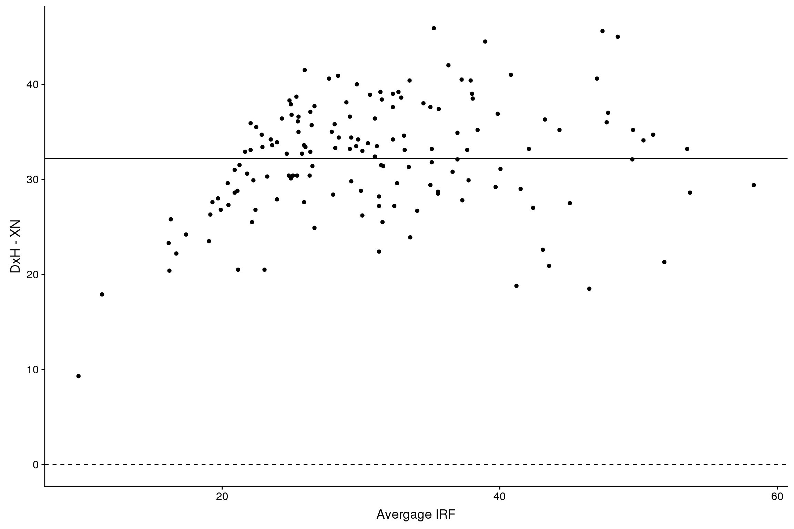
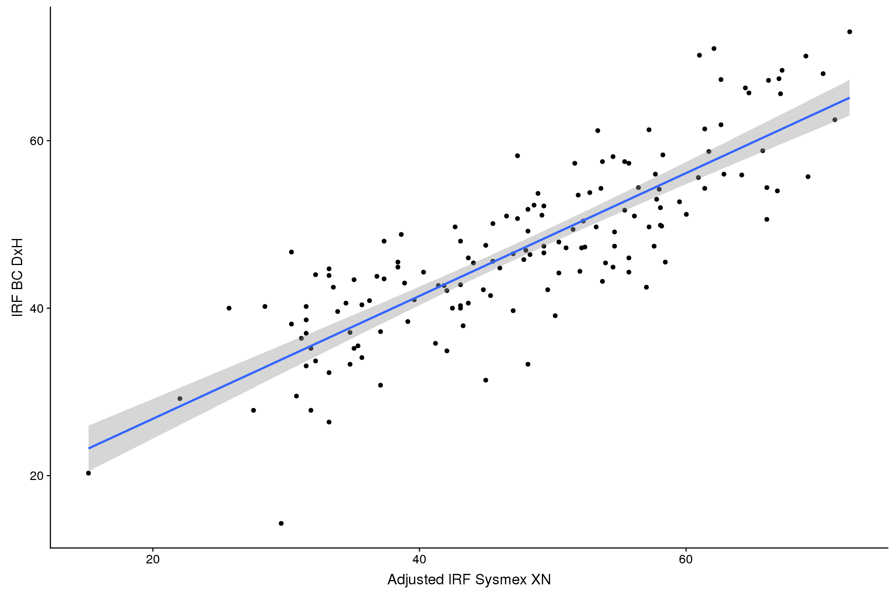
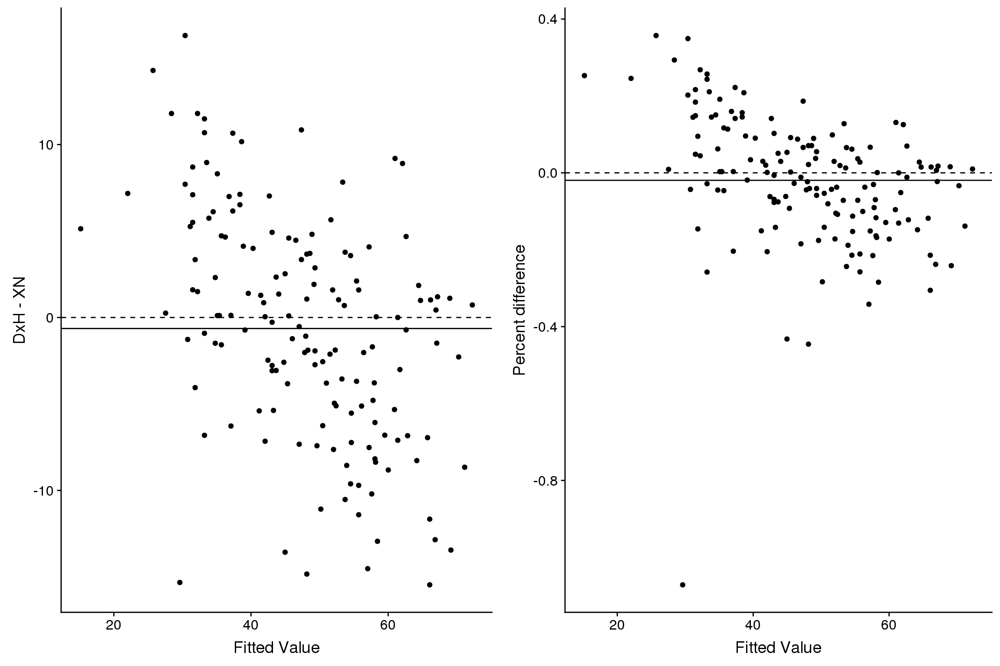

BC DxH/Sysmex XN IRF Correlation
Amrom
2018-08-31
Last updated: 2018-09-06
workflowr checks: (Click a bullet for more information)-
✔ R Markdown file: up-to-date
Great! Since the R Markdown file has been committed to the Git repository, you know the exact version of the code that produced these results.
-
✔ Environment: empty
Great job! The global environment was empty. Objects defined in the global environment can affect the analysis in your R Markdown file in unknown ways. For reproduciblity it’s best to always run the code in an empty environment.
-
✔ Seed:
set.seed(20180830)The command
set.seed(20180830)was run prior to running the code in the R Markdown file. Setting a seed ensures that any results that rely on randomness, e.g. subsampling or permutations, are reproducible. -
✔ Session information: recorded
Great job! Recording the operating system, R version, and package versions is critical for reproducibility.
-
Great! You are using Git for version control. Tracking code development and connecting the code version to the results is critical for reproducibility. The version displayed above was the version of the Git repository at the time these results were generated.✔ Repository version: 749705f
Note that you need to be careful to ensure that all relevant files for the analysis have been committed to Git prior to generating the results (you can usewflow_publishorwflow_git_commit). workflowr only checks the R Markdown file, but you know if there are other scripts or data files that it depends on. Below is the status of the Git repository when the results were generated:
Note that any generated files, e.g. HTML, png, CSS, etc., are not included in this status report because it is ok for generated content to have uncommitted changes.Ignored files: Ignored: .Rhistory Ignored: .Rproj.user/ Ignored: data/4-17-18/ Ignored: data/4-25-18/ Ignored: data/5-17-18/ Ignored: data/5-3-18/ Ignored: data/5-30-18/ Ignored: data/5-8-18/ Ignored: data/6-14-18/ Ignored: data/7-10-18/ Ignored: data/7-3-18/ Ignored: data/8-1-18/ Ignored: library/ Untracked files: Untracked: analysis/Figs/ Untracked: analysis/xn_8600.Rmd
Expand here to see past versions:
| File | Version | Author | Date | Message |
|---|---|---|---|---|
| Rmd | 749705f | Amrom | 2018-09-06 | new |
| html | 749705f | Amrom | 2018-09-06 | new |
| html | 427447f | Amrom | 2018-09-06 | latest |
| Rmd | 3c70201 | Amrom | 2018-09-05 | win |
| html | 3c70201 | Amrom | 2018-09-05 | win |
| Rmd | f9cfafa | Amrom | 2018-09-05 | wflow_git_commit(all = TRUE) |
| html | f9cfafa | Amrom | 2018-09-05 | wflow_git_commit(all = TRUE) |
| Rmd | 031d930 | Amrom | 2018-09-05 | wflow_git_commit(all = TRUE) |
| Rmd | 29a0268 | Amrom | 2018-08-31 | correlation |
| html | 29a0268 | Amrom | 2018-08-31 | correlation |
Introduction
At Children’s Hospital of Philadelphia we assessed approximately 150 specimens.
Analyzers - BC DxH - Sysmex XN
Unfortunately we could not perform testing in triplicate.
Data
Plots
Data was visualized with dot plots overlayed with loess smooth curves. Plot A below demonstrates a non-linear relationship between results from the two analyzers. Logarithmic transformation of the XN IRF results yielded a more linear relationship. As a result Deming regression was pursued using log transformed XN data.
Expand here to see past versions of unnamed-chunk-5-1.png:
| Version | Author | Date |
|---|---|---|
| 3c70201 | Amrom | 2018-09-05 |
| f9cfafa | Amrom | 2018-09-05 |
| 29a0268 | Amrom | 2018-08-31 |
Bias Plots 
Expand here to see past versions of unnamed-chunk-6-1.png:
| Version | Author | Date |
|---|---|---|
| 427447f | Amrom | 2018-09-06 |
| 3c70201 | Amrom | 2018-09-05 |
| f9cfafa | Amrom | 2018-09-05 |
| 29a0268 | Amrom | 2018-08-31 |
Expand here to see past versions of unnamed-chunk-6-2.png:
| Version | Author | Date |
|---|---|---|
| 427447f | Amrom | 2018-09-06 |
Deming regression
A Deming regression model was fitted using the log transformed XN IRF data and the raw DxH data.
Results demonstrate a pearson correlation coefficient of 0.833. Slope estimate was 54 (95% CI 66.428-42.026) and intercept was -12.005 (95% CI 0.986–25.82). The model is plotted below.
Expand here to see past versions of unnamed-chunk-8-1.png:
| Version | Author | Date |
|---|---|---|
| 749705f | Amrom | 2018-09-06 |
| 427447f | Amrom | 2018-09-06 |
Using the model to generate an “adjusted” IRF for the XN, below would be the correlation plot and the bias plots.

Expand here to see past versions of unnamed-chunk-9-1.png:
| Version | Author | Date |
|---|---|---|
| 749705f | Amrom | 2018-09-06 |
| 427447f | Amrom | 2018-09-06 |

Expand here to see past versions of unnamed-chunk-10-1.png:
| Version | Author | Date |
|---|---|---|
| 749705f | Amrom | 2018-09-06 |
| 427447f | Amrom | 2018-09-06 |

Session information
R version 3.5.0 (2018-04-23)
Platform: x86_64-redhat-linux-gnu (64-bit)
Running under: Red Hat Enterprise Linux
Matrix products: default
BLAS/LAPACK: /usr/lib64/R/lib/libRblas.so
locale:
[1] LC_CTYPE=en_US.UTF-8 LC_NUMERIC=C
[3] LC_TIME=en_US.UTF-8 LC_COLLATE=en_US.UTF-8
[5] LC_MONETARY=en_US.UTF-8 LC_MESSAGES=en_US.UTF-8
[7] LC_PAPER=en_US.UTF-8 LC_NAME=C
[9] LC_ADDRESS=C LC_TELEPHONE=C
[11] LC_MEASUREMENT=en_US.UTF-8 LC_IDENTIFICATION=C
attached base packages:
[1] stats graphics grDevices utils datasets methods base
other attached packages:
[1] bindrcpp_0.2.2 cowplot_0.9.3 readxl_1.1.0 mcr_1.2.1
[5] janitor_1.1.1 here_0.1 dplyr_0.7.6 ggplot2_3.0.0
[9] stringr_1.3.1 tidyr_0.8.1 purrr_0.2.5 knitr_1.20
loaded via a namespace (and not attached):
[1] Rcpp_0.12.18 cellranger_1.1.0 pillar_1.3.0
[4] compiler_3.5.0 git2r_0.23.0 plyr_1.8.4
[7] workflowr_1.1.1 bindr_0.1.1 R.methodsS3_1.7.1
[10] R.utils_2.7.0 tools_3.5.0 digest_0.6.16
[13] jsonlite_1.5 evaluate_0.11 tibble_1.4.2
[16] gtable_0.2.0 pkgconfig_2.0.2 rlang_0.2.2
[19] yaml_2.2.0 withr_2.1.2 htmlwidgets_0.8
[22] DT_0.2 rprojroot_1.3-2 grid_3.5.0
[25] tidyselect_0.2.4 glue_1.3.0 R6_2.2.2
[28] rmarkdown_1.10 magrittr_1.5 whisker_0.3-2
[31] backports_1.1.2 scales_1.0.0 htmltools_0.3.6
[34] assertthat_0.2.0 colorspace_1.3-2 labeling_0.3
[37] stringi_1.2.4 lazyeval_0.2.1 munsell_0.5.0
[40] crayon_1.3.4 R.oo_1.22.0 This reproducible R Markdown analysis was created with workflowr 1.1.1